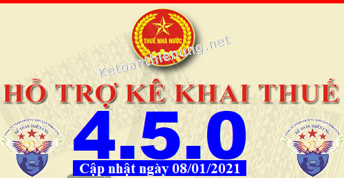
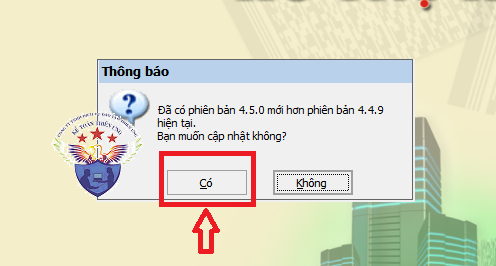
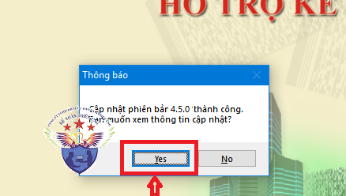

Phần mềm hỗ trợ kê khai thuế HTKK 4.5.0 mới nhất 2021 là Phần mềm HTKK 4.5.0 mới nhất ngày 08/01/2021 của Tổng cục thuế. Download phần mềm HTKK 4.5.0 miễn phí tại đây.
Ngày 08/01/2021 Tổng cục Thuế thông báo về việc Nâng cấp ứng dụng Hỗ trợ kê khai (HTKK) 4.5.0
TỔNG CỤC THUẾ THÔNG BÁO
V/v Nâng cấp ứng dụng Hỗ trợ kê khai (HTKK) phiên bản 4.5.0 đáp ứng Nghị định số 126/2020/NĐ-CP ngày 19/10/2020, Nghị định số 132/2020/NĐ-CP ngày 05/11/2020, Nghị định số 114/2020/NĐ-CP ngày 25/09/2020, Nghị quyết số 1109/NQ-UBTVQH14 ngày 09/12/2020, Nghị quyết số 1111/NQ-UBTVQH14 ngày 09/12/2020
Tổng cục Thuế thông báo nâng cấp ứng dụng Hỗ trợ kê khai (HTKK) phiên bản 4.5.0 đáp ứng Nghị định số 126/2020/NĐ-CP ngày 19/10/2020 của Chính Phủ quy định chi tiết một số điều của luật quản lý thuế; Nghị định số 132/2020/NĐ-CP ngày 05/11/2020 của Chính Phủ quy định về quản lý thuế với doanh nghiệp có giao dịch liên kết; Nghị định số 114/2020/NĐ-CP ngày 25/09/2020 của Chính Phủ quy định chi tiết thi hành nghị quyết số 116/2020/QH14 của Quốc hội về giảm thuế thu nhập doanh nghiệp phải nộp của năm 2020 đối với doanh nghiệp, hợp tác xã, đơn vị sự nghiệp và tổ chức khác; Nghị quyết số 1109/NQ-UBTVQH14 của Ủy ban thường vụ Quốc hội về việc thành lập Thành phố Phú Quốc và các phường thuộc Thành phố Phú Quốc, tỉnh Kiên Giang; Nghị quyết số 1111/NQ-UBTVQH14 về việc sắp xếp các đơn vị hành chính cấp huyện, cấp xã và thành lập Thành phố Thủ Đức thuộc Thành phố Hồ Chí Minh; Cập nhật hết hiệu lực một số mặt hàng chịu thuế bảo vệ môi trường, nội dung cụ thể như sau:
1. Nâng cấp ứng dụng đáp ứng Nghị định số 126/2020/NĐ-CP ngày 19/10/2020
- Chặn các tiểu mục 2663, 2666, 3003 trên tờ khai 01/PHLP từ kỳ kê khai tháng 12/2020;
- Chặn các tiểu mục 2663, 2666, tiểu mục lệ phí trên tờ khai 02/PHLP từ kỳ kê khai năm 2020;
- Nâng cấp bỏ kiểm tra ràng buộc ngày lập tờ khai bổ sung phải lớn hơn hạn nộp tờ khai;
- Kiểm tra tờ khai bổ sung không được nộp quá hạn nộp 10 năm;
- Cập nhật tờ khai cổ tức, lợi nhuận được chia cho phần vốn nhà nước tại công ty cổ phần, công ty TNHH hai thành viên trở lên có vốn nhà nước do Bộ, Ngành, Địa phương đại diện sở hữu (01/CTLNĐC) đối với kỳ tính thuế từ ngày 05/12/2020 như sau:
+ Sửa trường “[01a] Ngày thông báo chia cổ tức, lợi nhuận” thành trường “[01a] Ngày được nhận cổ tức, lợi nhuận”
+ Cập nhật công thức tính số ngày chậm nộp trên tờ khai bổ sung: được tính từ ngày tiếp theo sau hạn nộp cuối cùng (hạn nộp cuối cùng là ngày thứ 10 kể từ ngày nhận được cổ tức, lợi nhuận trên tờ khai, nếu trùng ngày nghỉ/lễ thì dịch sang ngày tiếp theo) của tờ khai đến ngày lập KHBS trên ứng dụng HTKK
2. Nâng cấp ứng dụng đáp ứng Nghị định số 132/2020/NĐ-CP ngày 05/11/2020
- Bổ sung 04 phụ lục giao dịch liên kết mẫu số 01, 02, 03, 04 đính kèm tờ khai 03/TNDN đối với kỳ tính thuế từ năm 2020:
+ Mẫu số 01: Thông tin về quan hệ liên kết và giao dịch liên kết
+ Mẫu số 02: Danh mục các thông tin, tài liệu cần cung cấp tại Hồ sơ quốc gia
+ Mẫu số 03: Danh mục các thông tin, tài liệu cần cung cấp tại Hồ sơ toàn cầu
+ Mẫu số 04: Kê khai thông tin Báo cáo lợi nhuận liên quốc gia
3. Nâng cấp ứng dụng đáp ứng Nghị định số 114/2020/NĐ-CP ngày 25/09/2020
- Bổ sung phụ lục miễn giảm thuế TNDN đính kèm tờ khai 02/TNDN, 03/TNDN, 04/TNDN đáp ứng Nghị định số 114/2020/NĐ-CP đối với kỳ tính thuế năm 2020.
4. Nâng cấp cập nhật thay đổi địa bàn hành chính thuộc tỉnh Kiên Giang đáp ứng Nghị quyết số 1109/NQ-UBTVQH14 ngày 09/12/2020
- Đổi tên huyện Phú Quốc thành Thành phố Phú Quốc, tỉnh Kiên Giang
+ Đổi tên Thị xã Dương Đông thành Phường Dương Đông, thuộc Thành phố Phú Quốc, tỉnh Kiên Giang
+ Sáp nhập Xã Hòn Thơm (mã 8132115) và Thị trấn An Thới (8132107) thành Phường An Thới (8132107), thuộc Thành phố Phú Quốc, tỉnh Kiên Giang
5. Nâng cấp cập nhật thay đổi địa bàn hành chính thuộc Thành phố Hồ Chí Minh đáp ứng Nghị quyết số 1111/NQ-UBTVQH14 ngày 09/12/2020
- Sáp nhập Quận 2, Quận 9, Huyện Thủ Đức thành Thành phố Thủ Đức, thuộc Thành phố Hồ Chí Minh
+ Sáp nhập Phường Bình Khánh (mã 7010307), Phường Bình An (mã 7010309) thành Phường An Khánh (mã 7010323), thuộc Thành phố Thủ Đức, thành phố Hồ Chí Minh
+ Sáp nhập Phường An Khánh (mã 7010305) vào Phường Thủ Thiêm (mã 7010311), thuộc Thành phố Thủ Đức, thành phố Hồ Chí Minh
- Sáp nhập Phường 6 (mã 7010511), Phường 7 (mã 7010513), Phường 8 (mã 7010515) thành Phường Võ Thị Sáu (7010529), thuộc Quận 3, Thành phố Hồ Chí Minh
- Sáp nhập Phường 5 (mã 7010709) vào Phường 2 (mã 7010703), thuộc Quận 4, Thành phố Hồ Chí Minh
- Sáp nhập Phường 12 (mã 7010719) vào Phường 13 (mã 7010721), thuộc Quận 4, Thành phố Hồ Chí Minh
- Sáp nhập Phường 15 (mã 7010929) vào Phường 12 (mã 7010923), thuộc Quận 5, Thành phố Hồ Chí Minh
- Sáp nhập Phường 3 (mã 7011905) vào Phường 2 (mã 7011903), thuộc Quận 10, Thành phố Hồ Chí Minh
- Sáp nhập Phường 12 (mã 7013111) vào Phường 11 (mã 7013127), thuộc Quận Phú Nhuận, Thành phố Hồ Chí Minh
- Sáp nhập Phường 14 (mã 7013129) vào Phường 13 (mã 7013109), thuộc Quận Phú Nhuận, Thành phố Hồ Chí Minh
6. Nâng cấp cập nhật hết hiệu lực một số mặt hàng chịu thuế bảo vệ môi trường
- Cập nhật hết hiệu lực một số mặt hàng chịu thuế bảo vệ môi trường trên tờ khai 01/TBVMT, 01/CNKD từ kỳ tính thuế tháng 09/2020, cụ thể:
+ Xăng sản xuất trong nước (trừ etanol)
+ Nhiên liệu bay sản xuất trong nước
+ Dầu Diezel sản xuất trong nước
+ Dầu hỏa sản xuất trong nước
+ Dầu mazut sản xuất trong nước
+ Dầu nhờn sản xuất trong nước
+ Mỡ nhờn sản xuất trong nước
+ Xăng E5 Ron 92 sản xuất trong nước (trừ etanol)
+ Xăng E5 Ron 92 nhập khẩu bán ra trong nước
+ Xăng nhập khẩu bán ra trong nước
+ Nhiên liệu bay nhập khẩu bán ra trong nước
+ Diezel nhập khẩu bán ra trong nước
+ Dầu hỏa nhập khẩu bán ra trong nước
+ Dầu mazut nhập khẩu bán ra trong nước
+ Dầu nhờn nhập khẩu bán ra trong nước
+ Mỡ nhờn nhập khẩu bán ra trong nước
+ Thuế bảo vệ môi trường mặt hàng dầu mazut, dầu mỡ nhờn bán ra trong nước
------------------------------------------------------------------------
Bắt đầu từ ngày 08/01/2021, khi lập hồ sơ khai thuế có liên quan đến nội dung nâng cấp nêu trên, tổ chức, cá nhân nộp thuế sẽ sử dụng các chức năng kê khai tại ứng dụng HTKK 4.5.0 thay cho các phiên bản trước đây.

----------------------------------------------------------------------------
Download Phần mềm HTKK 4.5.0 tại đây:

Để cài đặt được HTKK 4.5.0, máy tính của NNT cần đáp ứng thông số sau:
- Hệ điều hành WinXP (SP2, SP3), Win 7 trở lên… (không hỗ trợ hệ điều hành iOS, Mac).
- Máy tính có cài .NET Framework 3.5 trở lên (có thể tải bộ cài .NET Framework 3.5 tại đây).
- Nếu máy tính sử dụng hệ điều hành Win 7 trở lên không phải cài đặt .NET Framework 3.5 mà chỉ cần kích hoạt .NET Framework 3.5 đã tích hợp sẵn theo tài liệu hướng dẫn cài đặt tại đây
- Hệ điều hành WinXP (SP2, SP3), Win 7 trở lên… (không hỗ trợ hệ điều hành iOS, Mac).
- Máy tính có cài .NET Framework 3.5 trở lên (có thể tải bộ cài .NET Framework 3.5 tại đây).
- Nếu máy tính sử dụng hệ điều hành Win 7 trở lên không phải cài đặt .NET Framework 3.5 mà chỉ cần kích hoạt .NET Framework 3.5 đã tích hợp sẵn theo tài liệu hướng dẫn cài đặt tại đây
-----------------------------------------------------------------------------------------------
- Mọi phản ánh, góp ý của tổ chức, cá nhân nộp thuế được gửi đến cơ quan Thuế theo các số điện thoại, hộp thư điện tử hỗ trợ NNT về ứng dụng HTKK do cơ quan Thuế cung cấp.
Tổng cục Thuế trân trọng thông báo./.
-----------------------------------------------------------------------
Trường hợp: Máy tính các bạn đã cài phần mềm HTKK 4.4.9 rồi -> Các bạn chỉ cần Bật phần mềm HTKK 4.4.9 đó lên -> Phần mềm sẽ hiển thị Thông báo cập nhật lên Phần mềm HTKK 4.5.0 -> Các bạn bấm nút "Có"

-> Tiếp đó đợi phần mềm chạy cập nhật là xong nhé:

Như vậy là các bạn đã nâng cấp xong Phần mềm HTKK 4.5.0 nhé
------------------------------------------------------------------------